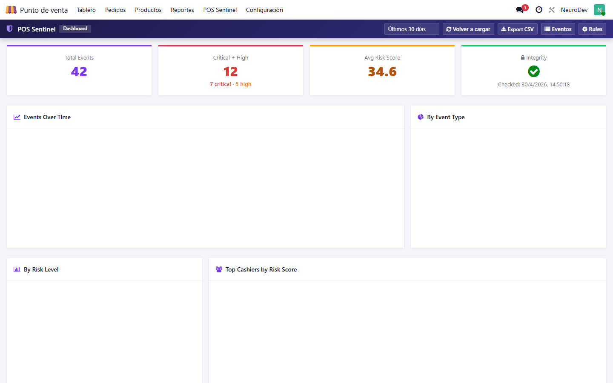
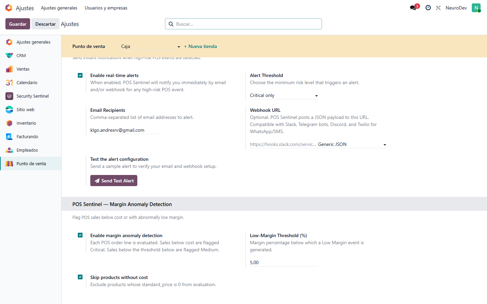
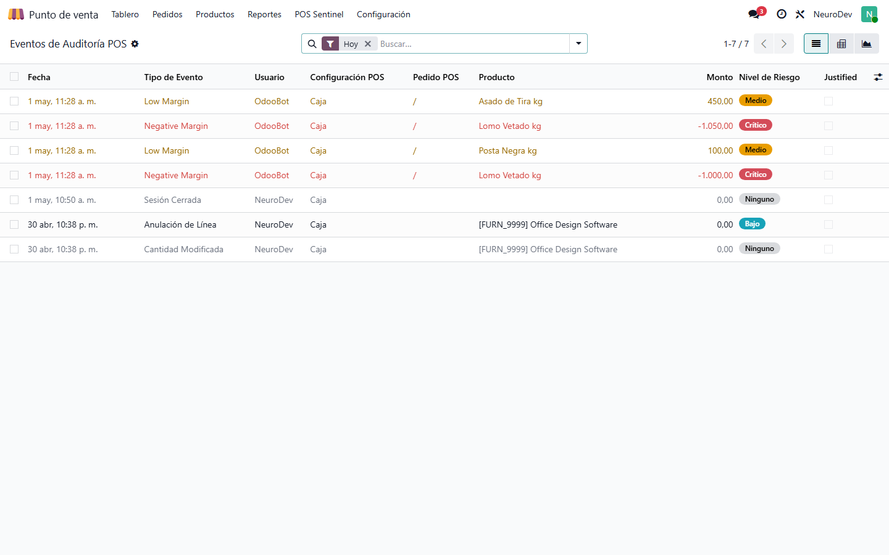
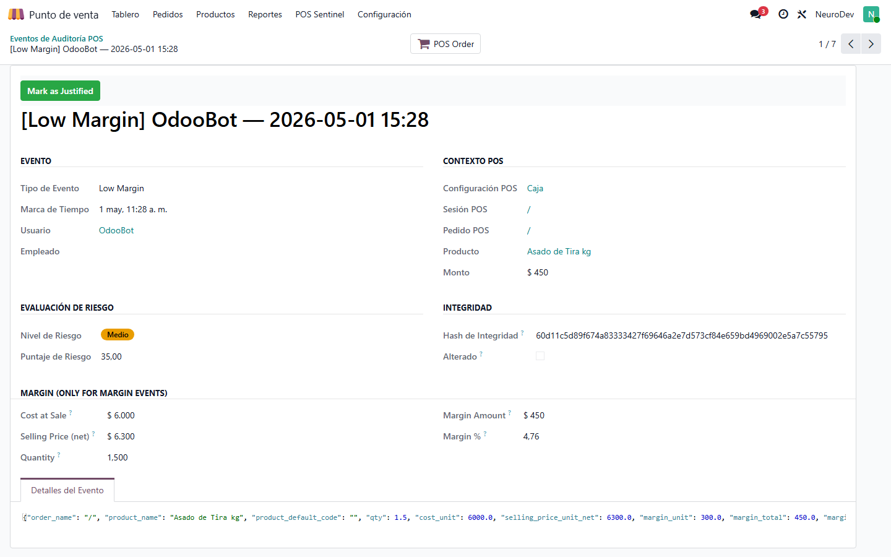
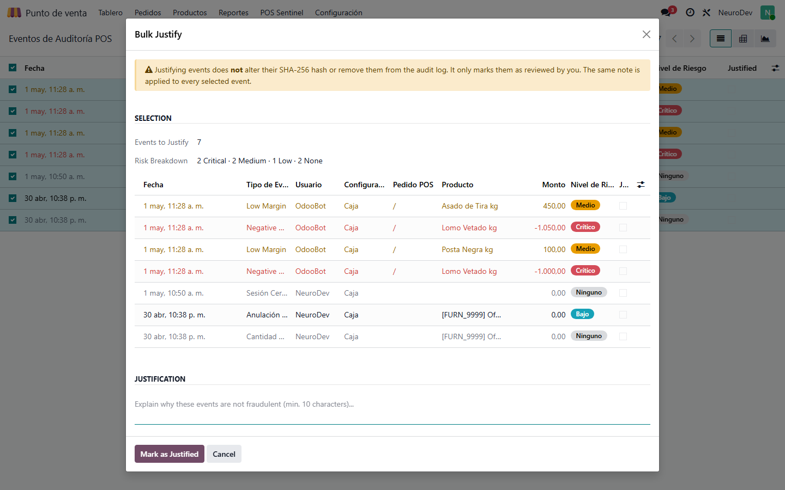
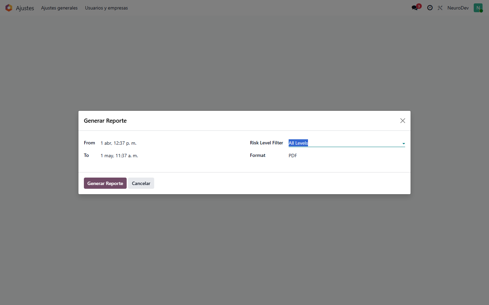
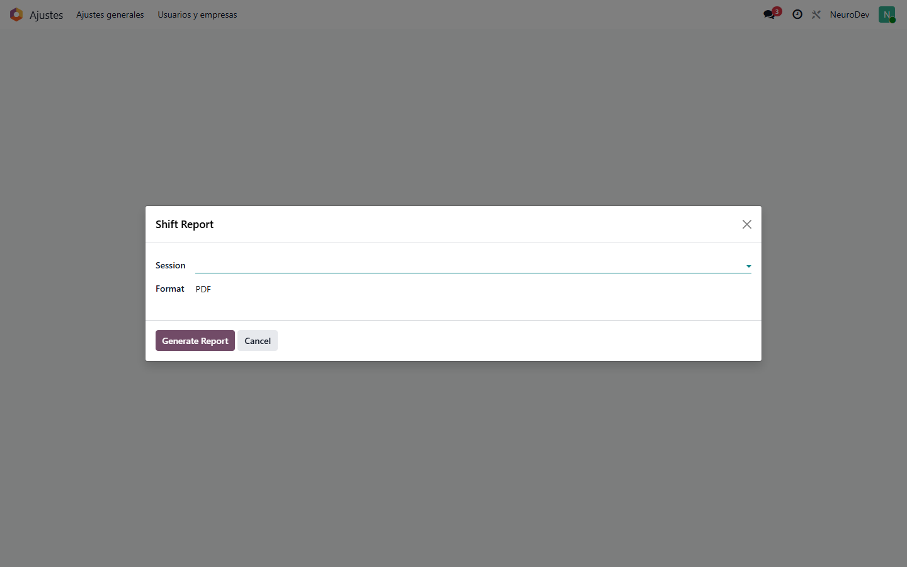

|
⚡ MAY 2026 LAUNCH PROMO ⚡
USD $299
USD $199
(-33%)
Limited launch pricing · Valid until May 31, 2026
Buy now and lock the discount — price returns to USD $299 on June 1.
|
USD $299
USD $199
-33%
Limited launch pricing · Valid until May 31, 2026
Buy now, lock the discount forever — price returns to USD $299 on June 1.
POS Sentinel — Behavioral Fraud Detection
Real-time behavioral fraud detection, margin anomaly alerts and immutable
audit trail for Odoo POS. Built for retailers who need to know instantly
when a cashier crosses a line.
Why POS Sentinel?
POS fraud is invisible — until it isn't. Cashiers void lines after payment,
apply unauthorised discounts, ring up sales below cost to reward an accomplice.
The data is in your database, but nobody is watching it. POS Sentinel does.
- Detects 18 distinct event types — voids, discounts, refunds, price overrides, cash movements, negative margin sales, low margin sales, and more.
- Configurable scoring rules — every event gets a risk score based on amount, frequency, after-hours timing.
- Immutable audit log — SHA-256 chained events, tamper-evident. Cannot be modified, deleted, or duplicated.
- Real-time alerts — email, Slack, Telegram, Discord, Twilio (WhatsApp/SMS) the moment a Critical event lands.
- Compliance-ready — PDF + XLSX reports for auditors, with risk filter, period filter, per-cashier breakdown.
Real-time Dashboard
KPIs at a glance: total events, critical+high count, average risk score, integrity
status. Drill-down charts: events over time, distribution by risk level, distribution
by event type, top cashiers ranked by accumulated risk score.

Margin Anomaly Detection (NEW in v1.9)
Every POS order line is evaluated against the product's standard_price
at the moment of sale. Two new event types catch the most common pricing-based fraud:
- Negative Margin — sale below cost.
Risk: Critical.
Catches collusion (cashier sells to an accomplice at cost or below).
- Low Margin — sale within configurable threshold above cost (default 5%).
Risk: Medium.
Catches sloppy discounts and pricing errors.
Configurable via standard Settings page: enable toggle, threshold percentage,
and skip-zero-cost flag (for services and unconfigured products).

Audit Events with Full Context
Every event records the cashier, POS config, session, order, product, amount, hash,
risk level, risk score, and (for margin events) cost-at-sale, selling price, margin
amount and margin percentage. The full forensic JSON is preserved in the Event Details
tab.


Bulk Justify (Forgiveness)
Security Managers can mark multiple events as Justified in one operation, applying
the same note to every selected event. The justification never alters the SHA-256
hash — the original event remains in the audit log forever, just flagged as reviewed.

Reports — PDF and Excel
Two report wizards out of the box:
- Audit Report — custom date range, with risk-level filter (All / Risky / High+Critical / Critical only). Output: PDF or XLSX.
- Shift Report — per POS session, with per-cashier breakdown of voids, discounts, refunds, price overrides, cash outs, and total accumulated risk score. Output: PDF or XLSX.


Security & Integrity
- SHA-256 chained hash — every event sealed at creation with a per-database secret salt.
- Triple-layer immutability — ORM overrides + ACL + record rules.
unlink, copy, and arbitrary write raise UserError.
- Automated integrity verification — scheduled action recomputes hashes and flags any mismatch as
tampered.
- Separation of duties — POS Auditor (read-only) vs POS Security Manager (config + justify).
- Multi-company aware — every event is company-scoped via record rules.
Real-time Alerts
Configurable alert pipeline triggers on Critical-only or High+Critical thresholds.
Three delivery channels:
- Email — comma-separated recipient list, fully templated.
- Webhook — generic JSON, Slack-formatted, Telegram-formatted, Discord-formatted, Twilio-formatted (WhatsApp / SMS).
- Test Alert button — send a sample alert end-to-end before going live.
Tech Stack
- Python 3 + Odoo ORM — backend events, scoring, integrity
- OWL 2 components + Chart.js — dashboard
- QWeb + xlsxwriter — reports
- Pure point_of_sale extension — no external dependencies beyond xlsxwriter (optional)
Compatibility
- Odoo 17.0 Community + Enterprise
- Odoo 18.0 Community + Enterprise
- Odoo 19.0 Community + Enterprise
License
OPL-1 (Odoo Proprietary License v1) — perpetual, single-database license.
Source code published on GitHub at github.com/neurodev-apps/pos_sentinel
for transparency and community auditability.
Built by NeuroDev — Chile · neurodev.cl · contacto@neurodev.cl